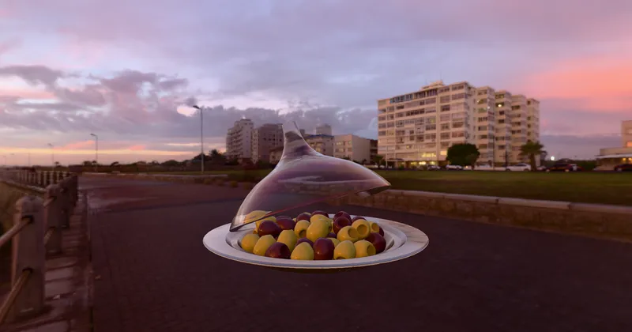

GLTF GLTF Extensions KHR_materials_iridescence
Iridescent Dish With Olives - RedGPU WebGPU Example
A dish demonstrating transmission, volume, IOR, and specular properties.
투과, 볼륨, IOR 및 스펙큘러 속성을 보여주는 접시 모델입니다.

GLTF GLTF Extensions KHR_materials_iridescence
A dish demonstrating transmission, volume, IOR, and specular properties.
투과, 볼륨, IOR 및 스펙큘러 속성을 보여주는 접시 모델입니다.
